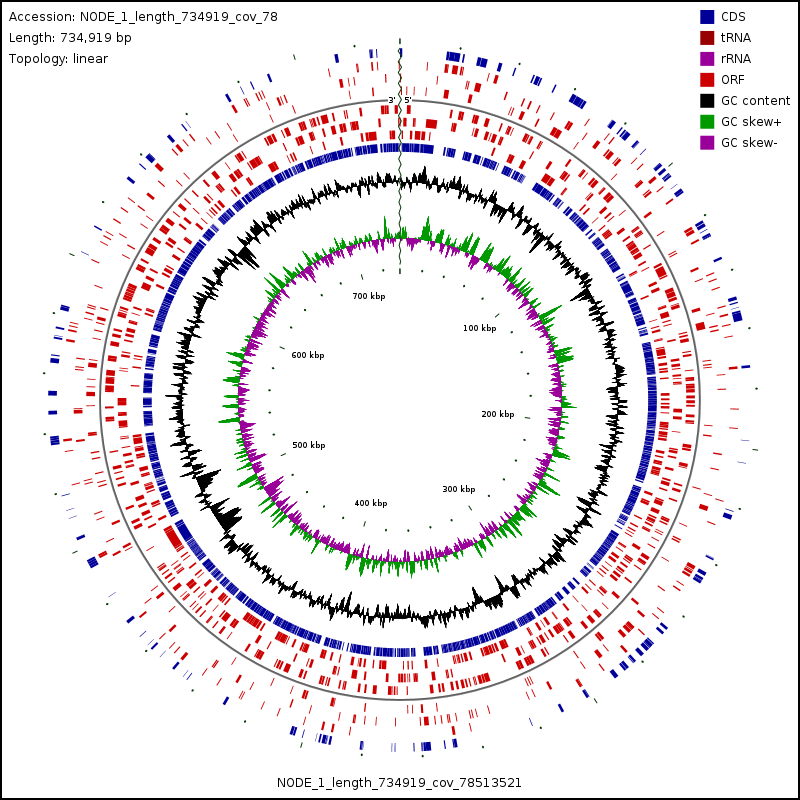

Overview
Purpose
Use sequence analysis tools to identify bacterial isolates and explore genomic features related to antibiotic production.
Bioinformatics
Use sequence analysis tools to identify bacterial isolates and explore genomic features related to antibiotic production.
← All projects
Overview
Use sequence analysis tools to identify bacterial isolates and explore genomic features related to antibiotic production.
Methods
Growth